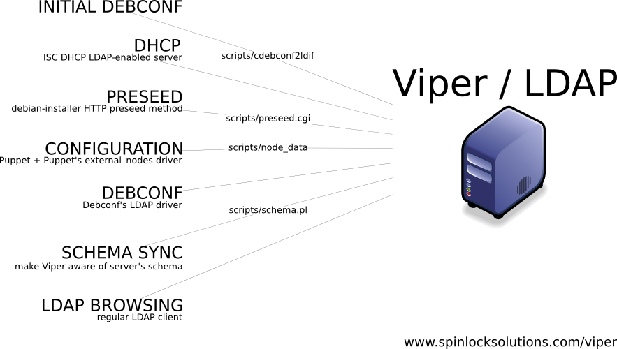

Viper - Custom Perl backend for use with the OpenLDAP server.
LDAP can be enormously successful in configuration management, but its
flat data structure, absence of any kind of dynamic behavior, and heaps
of duplicated data make it a mediocre tool.
Quick introduction to Viper backend
To build on LDAP's great
strengths while solving the deficiencies, a custom Perl-based OpenLDAP
backend has been implemented. It's called Viper.A "rapid fire" list of significant new features includes: search rewriting (subst), default entries (fallbacks), default attributes (append), dynamic values, expansion to values of other fields or files, sub-searching, entry relocation, caching of computed values, smart ADD and MODIFY handling and server-side Debconf prompting.
The implemented set of features allows LDAP to act as a powerful central data store, without any data duplication or need for batch scripts that would periodically re-generate config files. All data needs to be added only once, all components contact LDAP on the fly, and all data served by LDAP is current.
Having a custom backend also brings one other crucial benefit to the picture -- the ability to make provisions for existing components and their use of LDAP (DHCP server, puppet, Debconf) without requiring modifications to their source code.
Here's a quick overview of typical components that are accessing LDAP. If access is not enabled directly, but through an interface script, script name is also listed.

More introduction
The Viper backend implements regular LDAP functionality and can be used in general-purpose LDAP scenarios where you want quick results on a platform that already has extra features (default entries, query rewriting, dynamic values, etc.), and also lends itself to further custom functionality.However, it's main role is serving as the backend for automatic system installations and configurations, where the hosts are Debian-based systems retrieving configuration data using HTTP preseeding, Debconf and its LDAP driver, and in a final stage Puppet. A whole set of features has been implemented specifically for this purpose.
Viper backend has a number of specifics, of course; some are coming to play in all usage scenarios, and some primarily in automatic install scenarios.
Summary of features
Here's the summary of Viper features, grouped by category:General
Server data is kept in form of LDIF files in the filesystem (/var/lib/ldap/viper/), where each entry is represented by a directory structure (DN components) and a single file representing the final entry (leaf). It means that internally, on a low level, you can modify LDAP values like a filesystem operation (editing files and directories), that you can use symlinks and hardlinks, and that you can set file permissions to affect reading and writing. Files have a mandatory suffix, so that they are distinguishable from their corresponding directories, where the subentries are kept. Here's an example of disk structure:s1:/var/lib/ldap/viper# find .Each file is expected to contain only one entry, and so within each file, exactly and only the first entry is relevant. Everything in there that is either another entry or just invalid data (honoring server's schema), be it after or within the first entry, is IGNORED.
.
./ou=dhcp.ldif
./ou=dhcp
./ou=dhcp/ou=eth1.ldif
./ou=dhcp/cn=s1.ldif
./ou=clients.ldif
./ou=defaults
./ou=defaults/ou=hosts
./ou=defaults/ou=hosts/cn=netcfg.get_domain.ldif
./ou=defaults/ou=hosts/cn=partman.confirm.ldif
./ou=defaults/ou=hosts/cn=preseed.early_command.ldif
./ou=defaults/ou=hosts/cn=console-keymaps-at.keymap.ldif
./ou=defaults/ou=hosts/cn=time.zone.ldif
Adding entries
There is a config option available to allow ADD operation to overwrite existing entries without throwing ALREADY_EXISTS error. See 'addoverwrites'There is a config option available to allow ADD operation to ignore adds on already existing entries without throwing ALREADY_EXISTS error. Applicable when addoverwrites=false. See 'addignoredups'
Regarding values normalization, on every ADD we normalize entry DN and save it that way. It is not possible to retrieve the DN back in the original form submitted. Attribute values (such as ou=Hosts) are left as-is and are not modified even if they were normalized within DN.
(Debconf-specific) When entry is added somewhere under Debconf tree (configurable via a list of regexes), it is possible to check the list of entry's variables and see if the entry should be relocated to other parts of the tree. This is used to move keys from their host-specific location up the tree to become site-wide or global default. See 'addrelocate'
This functionality is debconf- and client- or server- specific, and requires that Debconf, running on client or server side, asks the regular question, and another question about where the answer should be saved. This relocation information is passed to Viper over viper_location= variable within the entry. Both server-side prompter and client-side LDAP-enabled backend and frontend that implement this described scenario are available.
Modifying entries
When a modify request is issued and the specific entry to modify is there, everything goes on as usual. But if the entry is not exactly there (i.e. it comes from a fallback), then it's possible to either return NO_SUCH_OBJECT (as if the entry was not found at all), or to copy & modify the fallback to the expected name, effectively creating the target entry in the process. See 'modifycopyonwrite'Some of the entry's attributes may actually not be present in the entry, but come from so-called 'appended values' (see 'Searching' features below). If a modify request is issued and the modification is to be performed on an attribute that does really exist, everything goes on as usual. But if it is one of the appended attributes, we retrieve its values and add it to the entry as if it was there all along. Then we let the modify procedure continue, so the attribute gets copied over, modified, and saved directly into the entry.
There is a config option available to ignore MODIFY requests which do not result in a different entry. (Useful with Debconf which treats all invoked questions as modified, and submits them back to the directory as modifications, even if their value did not change during the process). See 'modifysmarts'
Searching
When a search is made, it is possible to regex match combination of the input params (base, scope, deref, size, time, filter, attrOnly), and if all of them match a specification, then the params can be arbitrarily rewritten, i.e. you could replace search base with another base if certain filter is used. See 'searchsubst'Search rewriting is completely free-form, and it is possible to rewrite searches to a completely different suffix, as long as both are located in the same base directory.
This is a legitimate feature of the rewrite model and is officially used to rewrite incoming DHCP search queries to appropriate places with appropriate parameters.
When a specific search base is requested, and it does not exist in the searched location, it is possible to fallback to a chain of default entries. See 'searchfallback'
When an entry is found (directly or through fallbacks), it can be appended with attributes from other entries. The default entries to look up can be specified with the entry's seeAlso attribute, or fixed in a config file. See 'entryappend'
When an entry is read, it is possible to cause attribute value expansion into values of other entries' attributes, such as: "result is $ exp $ DN ATTR VALX" ===> "result is VALUE". DN is the wished entry's DN, ATTR is its attribute you want to expand to, and VALX is either a numerical ID of the value you want, or a string which is used to join eventual multiple values in a single string (can use " " or \s for space). Shorthand notation is also possible: simply ATTR [VALX] implies ATTR in the current entry, with selected VALX (or ID 0). See 'expandval'
When an entry is read, it is possible to cause attribute value expansion into values of a complete, valid sub-search. "find $ BASEDN SCOPE DEREF SIZE TIME FILTER ATTRONLY ATTR VALX GVALX" ===> "VALUE". All attributes correspond directly to standard LDAP search parameters. ATTR is the attribute to return. VALX is either a numerical ID of the value you want, or a string which is used to join eventual multiple values *of individual entry* in a single string. GVALX is the same as VALX, but specifying joiner for values *of different entries* (i.e. valx/gvalx spec of "|" ", " might return result such as "e1v1|e1v2, e2v1, e3v1|e3v2|e3v3". VALX or GVALX omitted default to 0 (first value). They can also be \s for whitespace and \0 for indicating that we want to expand into multiple attribute values, not join values into a single string. See 'findval'
When an entry is read, it is possible to cause attribute value expansion into values of on-disk files, ALWAYS relative to server data dir, such as: "result is $ file [spec] $ FNAME" ===> "result is FILE-DATA". [Spec] is optional and when number, specific line number is returned; when string, a line or $1 matching the regex from the file is returned; when not present, whole file is returned. See 'fileval'
When an entry is read, it is possible to cause Perl evaluation of contents within attributes, such as: "result is $ perl $ 3 + 4" ===> "result is 7". ** WARNING ** DANGEROUS ** DISABLED BY DEFAULT **. See 'perleval'
When entries are returned to the host, each entry will contain a DN of its actual location on the disk (if the entry is coming from a fallback, its DN may be something completely different from what was requested). That's more useful (and easier) than changing the DN to its would-be value. Experience also shows that the calling programs do not care about the DN and are not confused by this, so there are no adverse effects to it.
Configuration
All of the above features are tunable from the config file; non-trivial options do not have a default and so they must be present in the config file to get configured in the first place, otherwise they effectively stay disabled.Some config directives have short names, but you can call them using any longer form. For example, directive 'exp' can be, for clarity, written as 'expand' or 'expandVal'.
All directives from the config file are registered on the stack. The stack can be saved to file, loaded from file for processing, or reset. Saving and loading the stack allows for quicker and less error-prone approach in repetitive blocks, especially if they repeat for each suffix you configure. (Different suffixes can load each other's files as long as they're configured with the same base directory). 'Clean' can be called on purpose to remove all on-disk stack files.
Other
OpenLDAP locking is such that only one Viper function may be executing at a time (even if you have multiple Perl suffixes configured, only one is executing at a time), so no custom locking is necessary. But we still do manual flocks where necessary to keep things under control and cover scenarios with multiple LDAP servers in the same tree.Viper backend is called from OpenLDAP's back_perl handler, which is severely limited when it comes to user and access control. If you need any bind control beyond bind DN and password, or any further access control, chances are you'll have to extend back_perl.c.
Using scripts/viper.pl (or anything else that resembles the approach shown there) allows Viper to run standalone, directly under the Perl interpreter, yet producing the exact same results as if it was running under slapd. This feature is best suited for running Viper under perl profiler or debugger, but can come handy in other slick scenarios.
Some of the dynamically produced values might take a long time to compute. Viper supports a generic cache mechanism which allows caching of any overlay's result, with variable validity period, specified as time interval, number of accesses, or number of LDAP operations. Examples for time-based expiry: 5 (implies seconds), 5s, 10m, 2h, 2d, 1w. To specify expiry in number of accesses, use specifier 'u', such as 20u. Note that 20u implies the value will be rebuilt on 20th access, giving you cached value 19 times. To specify expiry in number of LDAP operations, use specifier 'o', such as 1o. Expiry setting of 1o is by far best overall setting that minimizes or eliminates risk of stale data getting served, while still showing massive performance improvement (multiple times). See 'overlayconfig'
Similar to the above, it's also possible to cache LDAP entry reads from disk. Cache specifications and explanation are the same as we just discussed, except that the performance gains are modest compared to the overlay cache (just in the <= 20% range). See 'cacheopen'
License & copyright
Spinlock Solutions --
Advanced GNU/Linux networks in commercial and education sectors.
Copyright 2008-2009 SPINLOCK d.o.o., http://www.spinlocksolutions.com/
Davor Ocelic, docelic@spinlocksolutions.com
http://www.spinlocksolutions.com/
http://techpubs.spinlocksolutions.com/
Released under GPL v3 or later.